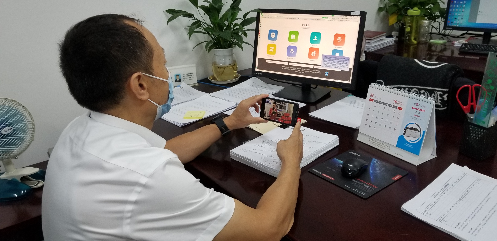

【信息发布时间：2020-07-08阅读次数：】 【我要打印】 【关闭】
近日，我中心围绕“绿水青山，节能增效”、“绿色低碳，全面小康”两大主题，开展了一系列节能宣传活动和体验活动。
本次节能宣传期间，我中心采取群分享、办公区域宣传画、宣传视频等多种方式，普及节能知识。并结合工作情况，组织观看公共机构能源资源节约经验交流云直播，学习绿色办公经验。
7月2日“低碳日”当天，中心开展能源紧缺活动，要求日照条件充足条件时不开灯，不充足时只开必要的灯；办公区域空调停开一天；停止领用圆珠笔、纸张等办公用品一天；倡导上下班1公里步行，3公里公交或自行车。
以此次活动为契机，我中心将不断加强节能监督工作，严格要求，从日常工作生活中做起，为张家港争创文明城市六连冠献出微薄之力，为带动全社会节能减排做出点滴贡献。
